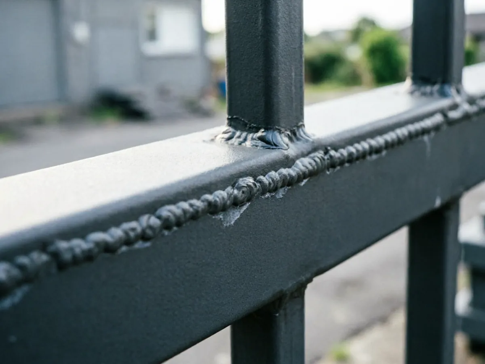
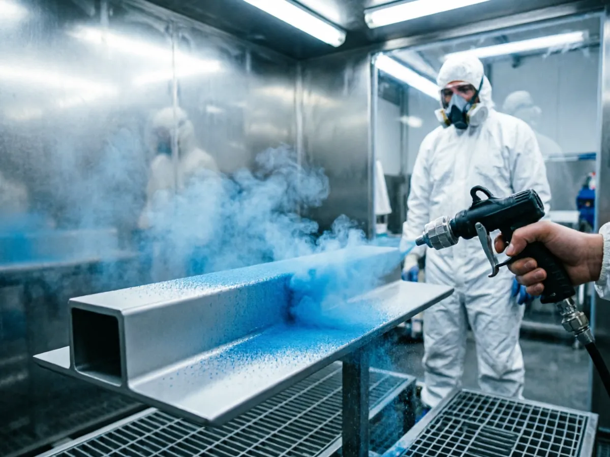
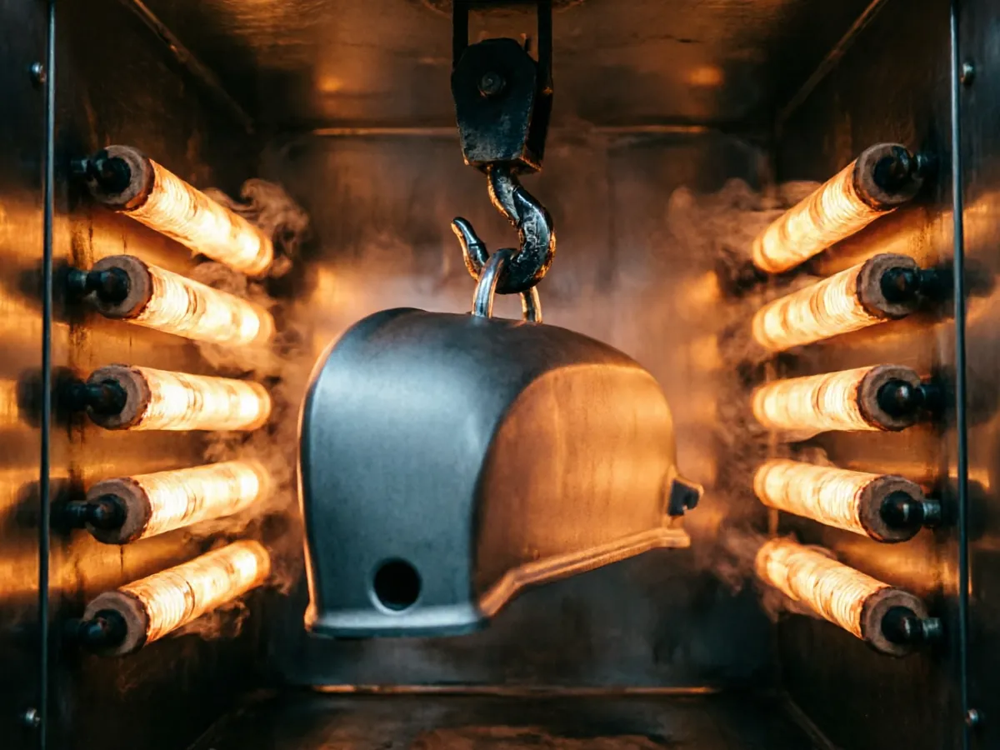
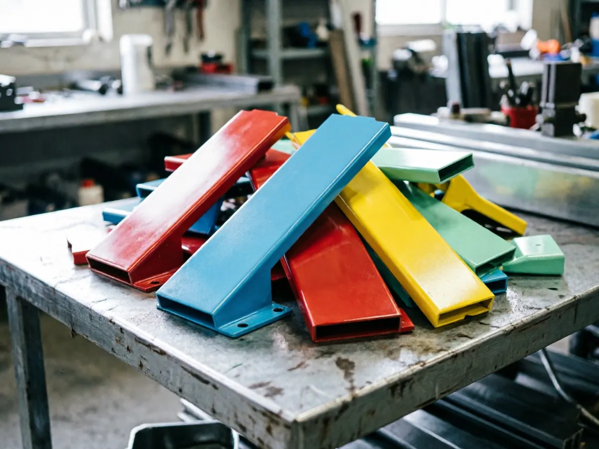

#8f8f8fПодготовка поверхности
Обезжиривание, пескоструйная обработка и фосфатирование. От подготовки зависит адгезия — снимаем старую краску и ржавчину до чистого металла.
Красногорск · Речная ул., 8 · ежедневно до 21:00
Полимерное покрытие в любой цвет каталога RAL — от профиля до ворот. Печь до 200 °C, слой 60–120 мкм, приёмка деталей ежедневно.
цвет на линии — ваш выбор из палитры · сменить ↓
01 / палитра
Держим веера RAL Classic и Design, колеруем по образцу заказчика. Матовые, глянцевые, муар и металлики — выбирайте цвет прямо здесь: он встанет на конвейер печи.
ваш выбор · на линии
RAL 2004Оранжевый чистый
матглянецмуар
подберём по образцу за 1 день
02 / прайс-лист
Двенадцать позиций без мелкого шрифта. Покрытие стойко к коррозии, влаге, реагентам и не выцветает. Точную смету считаем по чертежу или фото — по телефонам +7 (925) 333-86-66 и +7 (936) 333-86-66.
позиция прайса · 100 ₽/м
объём, пог. м
покрытие
цвет: RAL 2004 — стандарт
ориентировочно
0 ₽
100 ₽ × 25 пог. м
Уточнить · +7 (925) 333-86-66второй номер: +7 (936) 333-86-66
итог зависит от сложности изделия и объёма партии
03 / технология
станция
01
#8f8f8fОбезжиривание, пескоструйная обработка и фосфатирование. От подготовки зависит адгезия — снимаем старую краску и ржавчину до чистого металла.

#2271b3Электростатическое напыление: частицы полимера заряжаются и обволакивают деталь равномерно, включая кромки и сварные швы. Цвет — любой по каталогу RAL.

#e25303Деталь проходит камеру полимеризации: 180–200 °C, 15–20 минут. Порошок оплавляется и запекается в монолитное покрытие — без потёков и шагрени.

#006f3dПроверяем толщину покрытия, адгезию методом решётчатых надрезов и внешний вид при дневном свете. Брак не покидает цех — переделываем за свой счёт.
04 / отдел технического контроля
Каждая деталь проходит приёмку по чек-листу: толщина слоя, адгезия, внешний вид. Не прошло — переделываем за свой счёт.
«Идеально покрасили! Обращаемся к Андрею не в первый раз! Оперативно! Качественно! Отпескоструили нам старенький кашпо-велосипед, сделали его теперь ярким) таким красивым он не был даже новым)) покрасили и «петуньевое дерево» — теперь всё это украшение нашего сада))»
«Обращался несколько раз в эту компанию! Всегда оперативно берут в работу и качество на высоте! Я сам производитель металлоконструкций — здесь сразу 2 в 1: порошковая покраска и пескоструйная обработка. Доволен работой и партнёрскими условиями. Рекомендую!»
«Восстанавливали папину „шестёрку“. Диски были ржавые, с кусками отслаивающейся краски. Всё отпескоструили и выполнили порошковую покраску — теперь диски как с завода. Получилось просто идеально!»
05 / галерея работ
съёмка ОТК · смена 2 · без ретуши
06 / контакты
диспетчер цеха · ежедневно до 21:00
+7 (925) 333-86-66основной ↗ +7 (936) 333-86-66второй ↗смета по фото детали — за час в рабочее время
адрес
Речная ул., 8Красногорск · Московская областьрежим
ежедневнодо 21:00Полный адрес: Московская область, Красногорск, Речная улица, 8. Работаем ежедневно до 21:00 — привозите деталь, заберёте окрашенной.
Паспорт сборки · сайт собран в цехе ЦЕХ v1.0
проект pcpolimer · бросок SEED № 51
SEED · оси
композиция: наряд-заказ × движение: печь и конвейер × типографика: Tektur капс
G1 · направление
motion-рецепты
ворота G1–G4